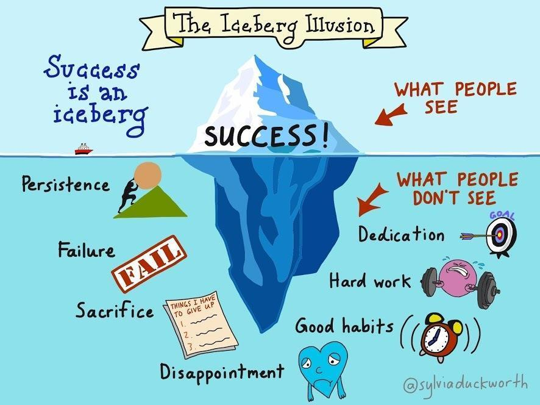
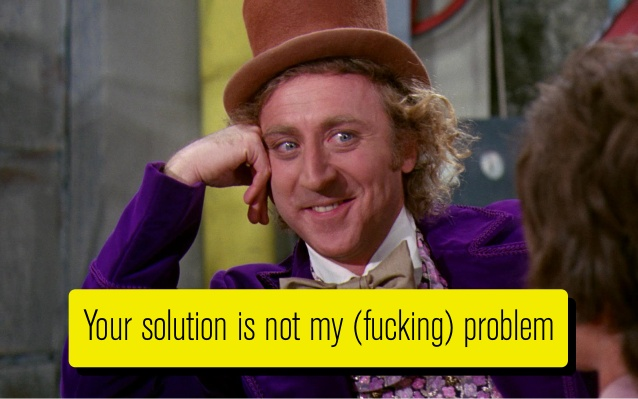
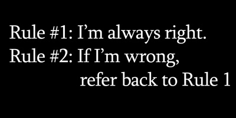

Nội dung
Bài viết này được viết trong lúc mình đang chán nản, không muốn làm việc nên lời lẽ có hơi chán đời một tí. Do là khoảng thời gian này, một số chuyện không vui xảy ra và công việc cũng nhiều. Sẵn có bữa nay, trút hết ra cho nhẹ người.
Mở bài
Trong buổi gặp gỡ các anh em ở MateBe. Anh Simon có đề cập tới việc tại sao mấy ông diễn giả toàn đi chia sẻ các Bài Học Thành Công, Bí Quyết Thành Công mà không bao giờ chia sẻ Bài Học Thất Bại. Bây giờ, mình lại đang tự hỏi. Vậy những lúc chán nản, muốn từ bỏ, muốn đi trốn đâu đó mà không có điều kiện (tài chính, thời gian,...) thì họ làm gì?
Thân bài
Người ta thường nói "Sống trong chăn mới biết chăn có rận". Thôi thì chúng ta hãy diệt rận hoặc bỏ cái chăn đó đi rồi mua cái mới, hổng được nữa thì tìm giải pháp. À mà cái vụ giải pháp này nhiều khi là cái thứ đem tới phiền não cho bản thân.
Ta có nhiều cách để tìm giải pháp như thử sai, nhờ người thân trợ giúp bằng hành động hoặc lời khuyên,... Thử sai thì đôi khi cũng nản lắm nhưng mình lại nhẹ nhõm đầu óc. Chứ nhờ người khác rồi để nghe những lời tự PR bản thân họ, rồi họ dìm hàng mình nữa. Lúc đó thiệt là đau đầu. "Your Solution Is Not My Problem".
Trong những thứ khiến mình chán nản gần đây là do ôm quá nhiều việc, chưa kịp làm quen vấn đề để rồi làm việc không hiệu quả. Lúc nãy, mình tìm được một bài viết của một bác đang gặp vấn đề do không biết bản thân thích hợp ở vị trí Front-End Developer hay Designer. Bài viết tên là The Front End Developer’s Dilemma.
Gặp đúng người đang cùng vấn đề với mình thật là sướng. Giống như đang gặp bug mà lên Stack Overflow tìm được giải pháp vậy. Qua vấn đề của họ, mình cảm nhận được vấn đề của mình như thế nào ở một góc nhìn khác. Mọi người cùng đưa ra lời khuyên để gỡ rối. Có như vậy thì người sau có gặp vấn đề này nữa thì cũng có cái để tham khảo. Nói chuyện không liên quan tí, văn hóa giải quyết vấn đề ở nước mình chưa có ý thức. Có một số bác toàn phủ định giải pháp người khác mà chả bao giờ phân tích cái hay dở rồi đưa giải pháp của bản thân ra. Ít ra cũng phải nói nó hổng được ở chỗ nào (Mọi nơi luôn, không riêng gì thế giới của dân CNTT).
Ngoài cách tìm giải pháp gỡ rồi, mình cũng có một hướng khác để quên đi chuyện không vui đó là tìm hiểu những gì mình thích. Đôi khi những thông tin tưởng chừng vô bổ đó lại có ích sau này khi bạn ở vị trí của Business Analyst thì sao? Lúc đó bạn sẽ phải có tí kiến thức về sản phẩm sắp tới để lấy yêu cầu rõ ràng, đầy đủ cho thời gian sắp tới. Đây cũng là cái ngu mà dự án gần đây mình mới hiểu.
Bạn có thể xem phim Jiro - Dreams of Sushi, học tiếng Anh với Dan Hauer, dạo các trang thương mại điện tử,... Còn mình thì lượn mấy trang liên quan về kèn. Nhờ nó mình nhận ra được việc chơi nhạc và làm phần mềm có nét tương đồng (mình đã có kế hoạch cho loạt bài viết này rồi). Hoặc là một số điều thú vị về kèn saxophone dòng Selmer Mark VI qua bài viết The Mark VI Mystique: Myths and Facts.
Kết bài
Dù sao đi nữa thì bây giờ cũng đã 4h30 sáng rồi. Mình ngủ đây để sáng chiến đấu tiếp.